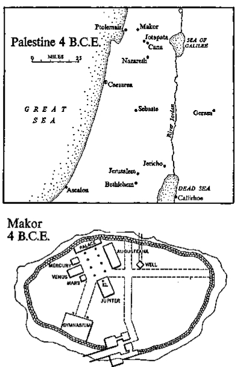

Glass phial
Glass phialGlass phial
Glass phial, hand-blown at Caesarea, 20 B.C.E., by a Roman artisan. Erroneously known as “a tear glass” and supposedly used for collecting tears at the death of a loved one, it was actually a phial for the storing of expensive perfumes, since the narrow opening delayed evaporation. Of clear glass when blown, now beautifully tinted by amber, green and aquamarine discolorations. Deposited at Makor in the spring of 4 B.C.E.
I have always held the town of Makor to be one of the most charming Roman colonies in our Jewish kingdom, and I do not speak from any narrow provincialism, for I have worked in all the great cities of the east. It was my good fortune to supervise the adornment of Jericho and I spent three years at Antioch rebuilding that well-regarded street first laid down by Antiochus Epiphanes. I paved it with marble and roofed it with an arcade resting on colonnades so extensive that the eye could not follow them to their end. My happiest period came, of course, when I constructed Caesarea, that admirable city, and I also assumed responsibility for rebuilding the Jewish temple in Jerusalem, but frankly I never derived much pleasure from that assignment, for I am no more a Jew than the king himself and I cite the temple merely to prove that I was involved in some fairly important projects.
If, therefore, I say that in my opinion our frontier town of Makor combines the best of Roman architecture with an exquisite physical setting commanding both the mountains and the sea, I am comparing my little town with the finest of Jericho and Antioch. I am even bold enough to discuss it in terms of Caesarea itself, and that’s saying much. When I rose, a few moments ago, in the cool dark hours before dawn on what will probably be my last day on earth, I looked out upon the beauty I had helped create here in Makor, and although I am not a sentimental man I cried involuntarily, “If we could only preserve this as it now stands! We’d have a memorial of the best that Rome accomplished.”
From my prison in the Venus temple I can see in the darkness the white façades that have brought a kind of perfection to this forum. To my right stands the small Greek temple erected, I am told, to honor Antiochus, the benefactor of this area. It stands low against the earth, with six flawless Doric columns, reminding us of how much we owe the Greeks. In the Roman plan for Makor, I retained this gemlike structure as the focal point, but converted it to our Jupiter temple. Local citizens claim it stands upon a spot that was sacred for the past three thousand years, and this I am ready to believe, for the little building has an inherent poetry that could not have sprung entirely from the hands of an architect.
Facing this Greek edifice, which I altered in no detail, stood the sprawling palace of the governors, which I rebuilt completely, adding a new façade with sixteen niches in which the king placed statues of the great men of Rome. When the impressive marble heads were put into position the Jews of Makor rioted, for statuary was an offense to their belief, and my wife Shelomith, who is a member of their religion, wept. But the king came, and against my judgment and my wife’s tearful pleading, assembled in the old gymnasium all Jewish dignitaries, and when he had them trapped, coldly sent his mercenaries among them with naked swords, and the Jews were hacked to death until the floor of the gymnasium was red and slippery.
I remonstrated with the king, telling him, “This slaughter is not required,” but he replied, “I have learned how to control Jews, and you have not,” And he was right, for after that first killing our Jews of Makor behaved, even if those in the rest of the kingdom did not.
When I was through with the old Greek palace no one could tell it had once been a Hellenistic construction, and from it the governors assigned by the king gave our region good government. In one sense it was foolish to speak of us as a Jewish town, for the kingdom of the Jews lay to the east and south; we were perched off to one side where the border of Phoenicia intruded, and we took our basic coloring from that region of the Roman empire. Like it we spoke Greek; we worshiped the Roman gods; we went to the Roman theater or to the arena in Ptolemais, where I had built a masterwork for gladiatorial combats. But structurally we were a part of the Jewish kingdom, and families like that of my wife’s played a respectable role in the town, even though the better jobs were held by Romans like me.
The dimensions of the forum were thus determined by the temple of Jupiter to the south and the governor’s palace to the north. Along the western side I built a series of three small temples, excellent work the king said, the central one of which we dedicated to Venus. It was always my favorite, a small marble thing with six Ionic columns that seemed to float in the air. It is ironic that I should now be imprisoned in this temple, but if it is true that each man in this life builds his own prison, and inhabits it the way crawling fish inhabit shells along the beach at Caesarea, then I have built for myself an exquisite jail, exactly suited to the kind of man I have always wanted to be. In the dark hours of this dawn I am content to be immured within the Venus temple, for it is a work with no error. Its stones fit without mortar. Its columns are precisely related to the façade. The view from any point within the prison is exactly as I had wanted it to be, and if I must die this day I would rather die here than anywhere else in the kingdom. Nor do I know of another spot within the empire where any of the potential prisons I built would suit me better. The palaces at Antioch are too large. The graceful forum at Jericho is too impersonal. And the loveliness of Caesarea belonged always to the king and never to me. But this quiet spot, at the edge of empire, seems to have been planned from the beginning as a proper place for me to die.
I look out from the Venus temple, past the half-sleeping guards, and see across the forum the building of which I am most proud. It runs almost the entire distance from the old Greek temple to the governor’s palace, a grave, heavy building containing neither preliminary columns nor niches for statuary. It is simply a mass of rock, perfectly proportioned, with straight and simple lines, ponderous perhaps but with that dignity I once saw when the legions of Julius Caesar were marching from Damascus to Egypt. They came forward not as ordinary soldiers but as a massive group having its own intention outside the men who comprised it; and from that day when I was in my early twenties, I tried to build into my structures the same sense of weight and dignity. In Jericho I did not succeed; the king interfered with all my plans and I made compromises whose ill effects could not be hidden. But when I decided to erect the great, solid building in Makor, the king was not at my elbow. He told me simply, “Build something to remind us of those first days when we fought together at Makor.” I am certain in my heart that the king wanted this excellent building to be named after him, but when it was finished he was apprehensive about his relationship with Rome —since he was not a Jew his kingship over the Jews depended solely upon the pleasure of Rome—so he imported a boatload of dignitaries from that imperial city and held a three-day feast during which he announced the name of my latest building.
I see it now, as the sun lightens, a low, formidable work marching toward me like the leather-shielded legions of Julius Caesar, but it does not bear his name. It is called by the sycophantic name our king gave it that day—the Augusteana—and in it we have long worshiped Caesar Augustus as our god. This my wife Shelomith has refused to do, as have the other Jews, but no trouble grows out of their rejection: in our town Roman and Jew live as they do in our kingdom: in a kind of armed truce, each holding to his own gods and to his own beliefs, as do my wife and I. She loves Jerusalem and the Jewish god, and is never so happy as when I am commissioned to do additional work at the temple; I, as a Roman citizen, keep mostly to Caesarea and the worship of Caesar Augustus, and it seems to me that we Romans have the better of the bargain, for there is no city in the empire, not even Rome itself, more enticing than Caesarea, that remarkable city which we have built of white marble and the sweat of slaves.
Between my jail and the Augusteana stands the Makor construction for which I alone am responsible: a double row of marble columns, tall, with heavy Corinthian bases and beautiful capitals on which nothing rests, for I placed these columns here only to add grace to the forum and to link the various buildings one to the other. Looking at them now, I think that my life has been a series of columns, marching along like days, and I have never had enough either of columns or of days. How many marble columns did we use at Caesarea? Five thousand? Ten thousand? They were the unifying beauty of that city, and they came to us in ship after ship sailing from Italy. One night the king and I walked through Caesarea, and he said to me in Greek, “Timon, you’ve made this a forest of marble. I shall send for a thousand more columns and well build an esplanade to the theater.” In Antioch, in Ptolemais, in Jericho, how many columns have I erected—those silent marching men of marble who bring grace to the roads they walk?
Our forum has only eight, extending in two lines from the Greek temple to the palace, but they summarize the thousands we used elsewhere, for without the king’s knowing it I inspected a hundred ships coming from Italy, seeking out the perfect pillars: this one near the Venus temple is fluted, and that pair by the Augusteana are purple. A purist, say, the Greek who built the first temple, would shy from the medley I have composed and would seek a single pure note repeated seven times. I wanted this summary of my life… how beautiful they are in their variety, how perfect in their proportions. From three thousand columns I chose these eight, and had I three thousand more to choose from I could not improve upon this group. Stand there, my shimmering columns bearing nothing on your heads. If it is today that I must die …
What difference does it really make whether the messengers come from Jericho today or six days from now? I am sixty-four years old, still lean as when I fought with the king, white-haired but with all my teeth. I have seen the legions of Julius Caesar. I accompanied Cleopatra for nine days, I knew the glory of Antioch intimately and I have worked hard. More fortunate than most, and infinitely more smiled upon than the king, I found early the one woman I was destined to love, and although there were periods when I discovered joy in the slaves of Jericho or with the graceful young eunuchs of Caesarea, I always returned to Shelomith. How fortunate I was, really. She lies now on her cot, sharing my prison, and even with her whitened hair she is as attractive to me as when I first saw her on the arm of the king. He, poor soul, has known ten wives and has grown to hate them all, while I have drifted along with Shelomith as a man drifts down a river in a small boat, heading always toward the sea of obliteration but finding always new pleasure in the scenery that comes upon the river banks and perpetual new delight in the companion who shares his boat. Shelomith is like a marble column who lives, and if we die this day my eight perfect columns in the forum of this little town will be her monument, for her spirit inhabits them already.
If I go to the southwest corner of my prison I can see down the avenue one of my happiest creations. In my youth I used to play near the old Greek gymnasium, then a building fallen into sad disrepair, and I used to run along the cracked and crumbling walls imagining myself an athlete at the Olympiad and shivering in the mournful memories of the place: at the broken gateway stood two statues which I loved even before I had learned to appreciate the excellence of Greek carving. To the left stood Hercules as a wrestler and to the right was nimble-footed Hermes as a runner, while inside the faded halls stood the statue which impressed me with both its gigantic size and its ugliness. It was Zeus, now called Jupiter, as a discus thrower, but we were told by loyal Jews that it was really Antiochus Epiphanes, the benefactor whom the Jews had driven from the land a century before, but no part of that story did we then believe.
I took this crumbling gymnasium and made of it a thing of beauty. For me it was a work of love, in no way conspicuous among the many temples and stadia I built, but it gave me almost as much pleasure as either the Augusteana or the little temple in which I now rest; because when it was finished, all in white marble, it became the center of life in Makor, and whenever the king had to sail from the port of Ptolemais, he stayed with me and spent hours in the marble baths. He once told me that some of the happiest hours of his life had been spent in Makor, the first town he had conquered and the base from which he had gained control of the Galilee and later of the entire Jewish kingdom.
Because the king had prospered in Makor, he allowed me freedom in rebuilding my little town: the main gate was reconstructed, but I kept the ancient zigzag pattern; and wherever needed, the walls that must have dated back to the time of King David were rebuilt, so that the town seemed encased like a precious jewel in a stout stone setting. The streets were clean and straight, and old houses were torn down to be rebuilt of white limestone. Even the old water system I refurbished, installing a new set of granite steps in the main shaft and placing marble benches about the well itself.
Under the Roman peace that dominated our kingdom, the environs of our town prospered too. The road to Ptolemais was straightened and paved with stone along which chariots could move with ease if not with comfort. I ordered the old olive press on my family grounds replaced by a superior type developed in southern Italy, and my fields were lined with stone walls, marking their proper limits. There was a neatness in our countryside which I added to whenever I returned home from working in distant cities, and inside the walls we knew an opulence which came to us from all parts of the world: Persia and India were as close to us as Britain or Gaul; caravans reached us from all directions and ships put in to Ptolemais from every port in our sea and from some along the western shore of Africa. Old Jews tell me that today Makor is as big as it ever was, with more than a thousand people living inside the walls and six hundred living in peace outside. I have seen all the rivers of the east. I have sailed into all the seaports. I have worked at Rome and Athens and Alexandria…
My wife is waking. I go to her bed and tickle the end of her little nose with my fingernail, so that I may be the first thing she is aware of on this last day. She turns on her pillow and smiles, and I recall what a philosopher once told me in Jericho: “A man is never old if he can still be moved emotionally by a woman of his own age.” If he was correct I shall die a young man. This morning I could run a race or direct the first steps in the building of a new temple, and I love Shelomith. She smiles and says with a certain gaiety, “I would not miss a moment,” and places her feet on the marble floor.
“They’re getting up,” the guards call one to another, and word is carried to the town officials.
“Is this the day?” Shelomith asks, and I tell her, as she washes at the alabaster laver I had carved in Antioch, that in my judgment the king must surely be dead by now—he could not have lived much longer, not possibly—and that before the day is out the messengers must arrive with the news that will set the soldiers upon us with their swords at the ready.
Some eleven times in my life I have seen the king’s mercenaries turned loose upon prisoners. It was a favorite trick of the king’s, to have his enemies enclosed in a narrow space, unarmed, and to send roaring through the doors his legionnaires in battle dress, wearing shields and short swords. Why the soldiers obeyed him I never understood, for the slaughter was hideous to watch, and it must have been equally repulsive to those who performed it. But always the soldiers were obedient, and their short swords flashed until their military tunics were red with blood; and almost never was any victim killed by a simple thrust. He was always hacked to death, with ears sliced off and legs cut away at the ankle until the carnage was more than I could bear. But the king would stand and watch, his gray-white tongue licking his lips, his fat hands clasping and unclasping in fury as he cried, “Death to them all, for they have opposed me.”
I first met Herod forty-five years ago at the zigzag gate of Makor. He was twenty-five years old then, and I nineteen. He was the glamorous, daring son of the Idumaean manipulator who was trying to win the kingdom of the Jews away from the rightful heirs of Judah the Maccabee. It seemed impossible to us then that a non-Jew could win the throne, and we who were young did not join Herod because we hoped for preferment if he became our king; we rallied to him, I think, because he was handsome and commanding. In those days there were bandits in Galilee who called themselves patriots, and we wished an end to them. Herod told us, “If we attack relentlessly we can conquer them. You shall have peace, and I shall have”—he hesitated, then added—“my reward.”
At different points near Makor we rounded up large numbers of the bandits, whom not even Rome had been able to subdue, but whom Herod terrified. At two of the general killings I was present; I carried my short sword among the unarmed prisoners and helped hack them to death. How many did we slay in those first campaigns? A thousand… four thousand? I swung my arm until it was leaden, and we crushed the bandits. The worst we burned to death. The seconds-in-command we crucified slowly. Herod, conspiring to win the Jewish throne, started by killing thousands upon thousands of Jews.
Herod chose me as his confidant because at four crises in his life I supported him when others feared to do so. I formed this habit in those early years, when the Jews rose against their tormentor and when it seemed, twice running, that he was doomed. In Jerusalem the leaders of the Jews pointed to his massacres in Galilee and said that he had acted outside the Jewish law, which was true. He had ignored it and had willfully perverted it, killing without trial or judgment, crucifying and burning; so he himself was hauled to trial, and on the evening before the tribunal convened, to sentence him to certain death, he asked me if I was as courageous in the law as I had been on the battlefield, and I said, “Yes.” So when the austere court of bearded elders assembled to condemn him, I marched my soldiers into the court and threatened to kill any Jew who voted against my general. The judges panicked and Herod was set free.
The second time I supported him was when the Jews, still hoping to keep him from the crown, sought to poison the mind of Antony, who had followed the greater Caesar in the bed of Cleopatra, our southern neighbor. I went to Antony, who ruled our areas, and spoke on Herod’s behalf; and partly because of my pleading Antony accepted Herod as his regent for the Jews, and in this manner my red-cheeked young general attained the highest power. I must say that he did not forget the assistance I rendered him in those first two tests.
Timon Myrmex he called me, for when we spoke together we used Greek, and when he saw my love for building he sent me from one city to the next, but our principal joy came when he summoned me to Caesarea, then an open sand dune behind Straton’s Tower, where together we planned one of the world’s great cities. “This is my Timon Myrmex,” he announced to his generals, “my digging ant. He is to do the building,” and never did he stint in his support. When I warned him that the Caesarea we had planned would absorb the revenues of his kingdom for ten years, he spurred me on, and later when I calculated that to rebuild the temple at Jerusalem along the plans he wished would cost an equal amount, he encouraged me to go ahead. If when I die tonight, with the soldiers hacking at me, I leave behind a Judaea more beautiful than it was before, it is not because I was a master builder, for in Antioch or Jericho there were men more capable; Judaea is a locus of the magnificent principally because King Herod had an unfaltering sense of beauty.
There are many—I have heard them in Athens and Rome—who ridicule the Jews and charge them with having no sense of beauty. They point to the ugly synagogues of the Jews as compared with a jeweled temple like the one I am in at this moment. Or they compare the ugliness of Jewish worship with the stately intonations of the priests of Jupiter. Or they ask where the Jewish statues and the Jewish architecture are. Or the beautiful songs that mark even a seaport like Ptolemais, where the Greek ships come. And it is widely held that the Jews do not know beauty. But for a while the Jews had a king who knew what grandeur was. My wife condemns him as a non-Jew and will not accept my praise; if I understand correctly he was a half-Jew, but he led his people to beautify their land as none other in my experience is beautified.
I remember when we first started building—at Jericho it was—long before Caesarea had been dreamed of, and we were watching slaves dress large chunks of granite for a wall, and Herod took a chisel and demonstrated an idea he had spoken of some days before. “If on every stone you leave the central part protruding, but cut the edges back to a uniform depth and uniform width, like this …” He directed the masons to cut a huge stone as he directed, and when it was done he had slaves twist and turn the stone in the sunlight, and when I saw the fascinating play of light and shadow across the uneven stone, I understood what he had visualized, and we built that wall as he suggested. And when it was finished the sun reflected from its curious rocks as it never had done before from any wall, and throughout the kingdom we set our slaves to cutting rocks in the Herodian fashion.
How many did we cut in those years? It must have been nearly a million. Whole armies of slaves spent their lives cutting away the edges of rocks so that the diamond-like stones could be fitted into perfect walls, with each stone uneven and projecting in the center, but perfectly aligned along the beveled edges. A million such stones? It must have been more like a score of million.
Have you ever seen the largest rocks in the walls of the temple at Jerusalem? Some are three times as long as a man’s height and proportionately huge in their other dimensions. It required two hundred men to move them from the quarries great distances away, but each monstrous stone fitted into its proper place, and each had its edges cut as Herod had determined.
He loved me not only because I stood by him in his four great crises, but also because I was his boon companion in the years when he knew Mariamne. She was a princess of the Maccabean line, and if he could marry her, he would through her royal blood gain an extra claim to the Jewish throne; but he loved her I know for much different reasons than dynastic ones. She was exciting, marvelously beautiful, witty and well skilled in love. I remember one day when her friend Shelomith walked with her through Makor; Mariamne clung to the right arm of the young king and Shelomith to the left, and they were a handsome trio. The four of us were much together in those days, laughing and talking in Greek, and then one night in Jericho I asked Herod if he thought it proper for me to marry a Jewish girl and he said that he intended doing so. There have been questions in recent years as to whether Herod loved this exquisite Jewish princess, or whether he married her to insure his claim to the throne of Judaea, but Shelomith and I know. We were with them in those early years, when Herod’s love for Mariamne so far excelled my love for Shelomith as to make me wonder if I were a normal man. He doted upon her and was enraptured when she presented him with two strong sons, Alexander and Aristobolus. I was present when the boys were named and I know the love that surged between the parents.
I could understand, even then, why Herod loved his slim Jewish princess. She was truly radiant as she moved about the kingdom, bringing to herself and her husband the love of the Jewish people. Even Shelomith forgot in those happy years that her king was not Jewish and that he had usurped the throne through guile, for those whom he had dispossessed were now repossessed in the person of Mariamne; and during those excellent years the executions ceased, and the soldiers with their short swords were not turned loose upon the Jews, neither in Jerusalem nor elsewhere in the kingdom. Herod and Mariamne were destined to become the fortunate lovers of ballads, and if Shelomith and I have developed between ourselves a profoundly satisfying love, I think it is partly because we shared with Herod and Mariamne their unparalleled affection.
“What is your most persistent memory of the lovers?” I ask my wife as she joins me at breakfast on this last day.
“That morning in Ptolemais,” she replies without considering any other. Herod had been to see Cleopatra in Egypt and had sailed back to Ptolemais, which was not even in his kingdom, for Caesarea was not then built and we had to use an alien seaport, and we three went to greet him. “I see him as he came running down the wooden pathway from the ship, leaping over bales of cotton and greeting his queen as if he were a boy. It was spontaneous, an act of love, and I have forgiven him many things because of the honesty he showed that day. How long ago was it, Timon?”
I cannot remember the years accurately, but we four were together again, here in Makor, on the eve of the gravest test, when the world of Herod hung in the balance. In the terrible struggle between Antony and Octavian we had sided with the former, principally because we were closer to Egypt and knew Cleopatra and her power. But at the battle of Actium, Antony lost, and it was rumored on good suspicion that Octavian would send a Roman army against Herod, dispossessing him of the kingdom and dragging him off to Rome for execution.
“I am sailing to Rhodes in the morning,” Herod informed us. “Timon Myrmex shall come with me and I will throw myself on the ground at Octavian’s feet. I shall plead with him for mercy as no man has ever pleaded before.”
That night we prayed at the old Greek temple over there, then walked to Ptolemais and boarded a small boat which took us to Rhodes. There, with a few of us at his side, Herod marched to face Octavian, the solitary inheritor of Julius Caesar, the man who had driven both Antony and Cleopatra to suicide, and in a few fateful sentences which were to determine the history of Judaea for generations, Herod said manfully, “It was Antony who set me on my throne, and I freely admit that to him I have rendered every possible service. Not even after his defeat at Actium did I desert him, for he was my benefactor. I gave him the best possible advice and told him there was only one way of retrieving his disasters. Kill Cleopatra. If he would only kill this woman I would give him money, protection of my walls, an army, and my active help in waging war against you. But there it is! His ears were stopped by his insane passion for Cleopatra. With Antony, I also am defeated. With his fall I lay aside my crown, for it is yours, Octavian, and not mine. I come to you placing all my hope in my unblemished character, for I know that you will not ask whose friend I was but what sort of friend I can be.”
Octavian, whom now we worship as Caesar Augustus, watched with fascination as Herod prostrated himself, uncrowned and with no mark of dignity upon him, and on impulse the victorious emperor of the known world caused him to be raised up, saying, “It was a very good thing for me that Antony listened to Cleopatra’s advice and not yours. Through his folly I have gained your friendship. Henceforth you shall be my king of the Jews.” Thus Herod, with a bravery not equaled in my lifetime, regained his throne from an enemy who normally should have slain him.
As in so much that he has done, Caesar Augustus acted wisely, for Herod has proved one of the great kings of the Roman provinces. I’ve worked for the proconsuls of Antioch and Spain, and they did not compare in either character or energy with our king Herod. He has kept peace in his part of the empire while extending our borders to their natural limits. To the Jewish kingdom, which had known war and desolation under the later Maccabees, he has brought tranquillity if not acceptance; during his reign no bandits and no extremists have plagued our land, and some years ago when I stopped off in Rome on my return from Spain, Augustus himself told me, “I remember that day when you came to Rhodes with Herod. It was an impudent gesture he made, but I wish I had always chosen my kings so wisely.”
How then, in spite of these successes, has Herod degenerated so miserably? Was he haunted by some evil spirit determined to destroy his grandeur? Or did his hatred and suspicion of the Jews slowly derange his mind? Some say that a snake wormed its way into his belly, gnawing at his vitals, but Shelomith and her Jews claim that their god has placed a special curse upon him for having usurped the throne of David. I have my own theory.
I should have foreseen that these things might happen, for thirty-one years ago he came to my quarters in Jericho, where I was building him a temple, and threw himself upon my couch, whispering with horror, “Myrmex! You must kill a man! I have proof that Aristobolus has conspired against me.” I drew back in surprise, for Mariamne’s brother was only seventeen and the darling of the Jews, for in him they saw a prospect for the re-establishment of Maccabean rule.
“The young schemer has plotted to steal my kingdom and must die,” Herod whispered, and when I warned him not to kill the queen’s brother, he cried in a mad frenzy, “Don’t mention their names together. Mariamne’s a goddess and her brother a viper.” Then he added significantly, “This afternoon he goes swimming.” He summoned the captain of his Cilician guard, who explained the plot: “Myrmex, the young man trusts you. When he enters the pool, you move forward to embrace him, but in doing so, grab his arms. My men will swim under water and catch his feet.”
It was a lovely pool, one that I had edged with marble, and I made believe that I was swimming when Aristobolus appeared, moving through the sunlight as if he were a Roman god. “Greetings, Timon,” he called, and when he came down the marble steps I waded forward to embrace him and pinioned his arms, so that when the Cilicians grabbed his feet I could feel the tremor pass through his body. He gave me a wild stare, his eyes less than a cubit from mine, but I set my teeth and brought my hands upward until they grasped his neck, and in this manner we dragged him under the water.
I had nearly forgot that murder of Aristobolus—for dynasties must protect themselves, and the young Maccabean had proved himself too popular with the mob—when Herod climbed the steep path to Massada, where I was converting ruins into a fortress-palace unmatched in the east, and there as we sat like eagles looking down upon the Dead Sea and the hills of Moab he whispered again, “Myrmex, how can I bring myself to do it?” He became a man distraught, almost insane I judged, and when he began moaning like a witch I dismissed my helpers and as they filed down the rocky footpath like ants I asked what he was required to do that so agitated him.
“I must kill Mariamne,” he said, looking up at me like a wild Essene from the desert.
“No. No,” I protested as if he were my brother, but on his mountain peak he ranted on with circumstantial evidence against his blameless wife. He truly intended to kill her, for in some way she had conspired against him. I deafened my ears and said, “Get down from here and tell me no such madness,” and he drew back with fearful suspicion, his hand on his sword, for we were alone at the edge of the cliff, and he cried, “You are in league with her too. Augustus protect me! Myrmex intends murdering me.” I slapped the mad king and led him slowly down from the cliff, saying, “If you cannot trust me, Herod, your world is indeed crumbled.” And when we were on safe ground I said, “Now tell me your fantasies.”
I took him back to Jericho and during each portion of the trip he recited her guilt. He had proof without question, he said, and for three days he raved, unable to bring himself to kill her. But finally he gave the signal and his mercenaries marched implacably to Mariamne’s room—they rarely ran to such assignments —and slaughtered her.
When his faultless wife was dead he loved her more than he had when she was alive. He stormed about his vast palaces, screaming for mercy from the ghosts that haunted him. He would come rushing to my apartment and sit staring at Shelomith, then break into passionate tears, crying, “I killed the fairest Jewish princess the world has known. I am condemned.” In grotesque sequence he married a chain of other women. He had many children who may already have inherited his kingdom, and he stormed among his female slaves, pointing to this girl or that and shouting, “You are not Mariamne,” but he took them nevertheless.
On the ship that brought me back from Spain there had been a wench well used by sailors, an attractive girl whom I in my loneliness fancied, but the captain of the vessel warned me, “She has the seaport sickness,” so I contented myself with watching from afar, but one day as Herod walked along the quays at Caesarea he saw this girl and cried, “You are Mariamne,” and she did indeed look like our dead queen. “Not that one,” I pleaded, but he was obsessed with her regal beauty and had his way, but later when the sickness struck he railed at me, “I told you it was Mariamne! She has come back to curse me,” and he fell ill, but an Egyptian doctor cured him for a while.
When his anguish was greatest, when something reminded him especially of Mariamne, he would come to me distraught and say, “We shall build a superior temple at Antioch,” and for a while his energies would be diverted into this channel. But soon ugly suspicions of other plots against him would develop. One day he ordered thirteen women placed upon the rack for such tortures as no human body could stand, and when in their agony they confessed to fantastic crimes and implicated men they did not even know, the suspected ones were dragged to an arena where the mercenaries were sent among them swinging their short swords, hacking and killing the innocent until we who watched were sickened.
Then he came to me, whispering again, “They are plotting against me.” And this time it was his own children, the sons of Mariamne whom Shelomith and I had helped name. We had been present at their circumcisions, and now they were accused of attempting to poison their father. This time, praised be the gods, Caesar Augustus intervened to warn Herod that he must not kill his own sons, and there was a pathetic reconciliation in which Alexander and Aristobolus—the latter had been named for his uncle whom I had helped drown—tearfully swore filial love for their demented father and promised him their loyalty.
But within a short time he came to me once more: “The fiends are still planning to kill me,” and this time he brought me proof of their guilt. I therefore accompanied him to Berytus, the city that Caesar Augustus had appointed for the trial, and on behalf of my king I made an impassioned plea before the judges. Herod himself followed with a hideous series of charges and at last the court gave him reluctant permission to kill his sons, should he upon reconsideration wish to do so. Clutching the permissive papers like a maniac, Herod returned to Judaea with a list of three hundred principal citizens who were suspected of being involved in the plot, and when I saw the names I realized that many of the victims could not possibly have been implicated and I started to argue with him, but he shrieked, “They have conspired against me and they shall die.”
For some time Herod shivered alone in his palace in Caesarea, undecided as to whether or not he should murder Mariamne’s sons, and Shelomith and I tried to persuade him not to do so, but whenever he looked at my wife waves of regret swept over him and he would subside into tears, bewailing his lost princess and his queen; but when this sorrow overtook him it served only to intensify his determination to kill her sons as well, so I forbade my wife to see him again, trusting that by myself I could restrain his vengeance.
“Turn your sons loose,” I pleaded. “Release the three hundred Jews.”
I might have succeeded except for an old soldier who frequented the palace. Herod gave him trivial jobs out of gratitude for the old man’s help in earlier campaigns, and this veteran grew bold enough to warn Herod face-to-face against his plan for murdering his sons: “Take care! The army hates your cruelty. There isn’t a private who doesn’t side with your sons. And many of the officers openly curse you.”
“Which ones would dare?” Herod cried, and the foolish old man rattled off their names.
When this occurred I lost all chance of controlling the king. He dispatched his bodyguard to arrest everyone named, then threw the old soldier upon the rack, torturing him beyond endurance, twisting and turning his body, jerking him until his joints came apart and bones cracked. The veteran made confessions that were valueless, but Herod accepted them. Assembling a mob he had the accused officers brought before him. In a wild speech, bursting with passion and lust, he built up a story of conspiracy and guilt that terrified the populace. “Your kingdom is threatened,” he told them, and at the height of his oratory he screamed, “These are the guilty ones. Slay them!” And the mob swept in with clubs and wrenching hands. Dozens who knew no guilt of any kind were torn apart that day, their heads crushed while their king danced up and down, screaming, “Kill them! Kill them!”
How many Jews did Herod slay in his years of madness? How many columns did he erect during his years of greatness? Neither number can be identified. I, who attended only a few of the massive slaughters, must have witnessed with my own eyes six or eight thousand of the kingdom’s best people hacked to death. One senseless incident: a woman getting her hair curled by slaves spoke against the massacres. A maid reported her and she was put to the torture. She spewed out the names of sixty accomplices, to what, no one ever knew. These in turn were tortured upon the rack, with African and German soldiers leaning on the screws, and they implicated hundreds of others. So all were slain without trial for a crime that had not even been contemplated or named. Their wealth went into the coffers of the king, for their families even down to children two months old were also slain.
How many Jews did Herod slay? How many great minds did he drive to oblivion? How much of the power of our kingdom was destroyed? I could not even guess, but the slain great ones are not to be numbered in thousands. We must think, rather, of tens of thousands, and always the best men and the best women of our nation. I am amazed that the Jews still have persons capable of collecting taxes or drafting laws, but I am not amazed that Shelomith and I have finally been caught in Herod’s web. Who informed upon us? I cannot guess. What was our crime? It’s impossible even to speculate. Perhaps a woman grew tired of her lover, and on the rack, as the Circassians bore down upon her, she uttered names from some distant recollection. I ask Shelomith what she thinks of this theory and she replies, “It’s as good as any other we’ve proposed.”
How terrible the tragedy became! Of my friends, one in three fell to the tyrant: Antigonus dragged down by the rumor of a fishmonger; Barnabas slain because he held land the king wanted; Shmuel, the uncle of my wife and a trusted Jew, beheaded on the accusation of a drunken Greek sailor; Leonidas, Marcus and Abraham, all dead for no reason that I know; the poet Lycidas and the songwriter Marcellus slain as members of a conspiracy whose outlines were not defined; Isaac and Yokneam dead merely because they owned silver. I could continue but the roll call is meaningless, for any family in Judaea could equal it, with different names sacrificed to different charges.
Why have the Romans allowed this madman to persecute his own people in this manner? Judaea is far from Rome and of little consequence, really. Years ago with my help Herod charmed Caesar Augustus, and in the intervening decades the Roman emperor has been willing to support Herod so long as the latter maintains discipline along the borders of the empire. Reports filter back to Rome, of course, but they are charges made against a king of the scarlet and lodged before an emperor of the purple, so Augustus always sides with Herod. Once a commissioner sent out to Caesarea confided to me, as a fellow Roman, “Does it really matter, one way or the other, if most of the brilliant Jews are killed off? Won’t it be easier for us to rule if they’re eliminated?” So Herod was not only permitted to destroy the nation but actually encouraged to do so.
A few weeks ago, however, events took a turn that will probably make even Rome notice the terror that has overtaken its stiff-necked Judaean outpost. Long ago Herod as a gesture of ultimate defiance to the Jews, who hated him as much as he despised them, caused to be erected over the main gate of the temple a wooden image of a Roman eagle, the first statuary that had defiled the temple since the days of Antiochus Epiphanes, and for years the faithful Jews were impotent to do anything about the infuriating symbol. When it was first erected I did not understand Jews as well as I do now, and I did not anticipate their permanent resentment against this affront to their religion; now, thanks to Shelomith, I think I understand.
At any rate, some days ago two loyal priests harangued their students to the point where a group of young men suspended themselves by ropes from a high point and chopped down the Roman eagle. Throughout Jerusalem the devout began to cheer, and I think there might have been a riot except that Herod’s African and German mercenaries descended upon the mob and arrested the two priests and about forty scholars, who were dragged before the king. His rage was beyond reason, for he saw that what the Jews were doing against him would place them into direct conflict with Rome, and this would put his crown in jeopardy. When that wooden eagle toppled he could feel his crown tottering. In blind fury he struck back. The two priests and the three boys who chopped down the eagle were burned alive before the temple gates. The other forty were to be herded into a small enclosure, where African soldiers were turned upon them until all bodies were hacked apart. The eagle would be replaced with a larger one, Herod informed Augustus, so that Rome need not fear. Herod would kill a million Jews, if it were necessary, to keep Caesar Augustus placated.
Publicly he bragged to Rome, but secretly he was embittered by the antagonism of his Jews, and he declined into his fatal illness. Sensing that he was about to die he begged me to accompany him to hot baths on the other side of the Jordan, at a spot where sweet waters issue out of the rocks and flow into the Dead Sea, that lake of bronze. Callirhoe, the place is called, and as our entourage paraded along the bleak, deserted lands east of Jerusalem in search of it, I felt that we were dead men marching across the landscapes of hell, and Herod must have shared my thoughts, for he forced the soldiers to draw the blinds about his litter so that he need not see the desolation which so precisely matched the mourning of his spirit. At night, when our camp was pitched, he talked with me in Greek of the philosophers he had known, of the Greek beauty that had impressed him so deeply throughout his life, and he said with a dry cackle in his throat, “You and I were the best Greeks of all, Myrmex. Rome thinks of us as Romans, but we fooled them. Not even Caesar Augustus could buy my soul, for it is Greek.” I was surprised at his use of the word soul, for this was a Hellenistic word not familiar to Jews, nor was the concept it represented, but it summarized his attitude toward life. Inspired by our hopeful conversations, he gained strength as we marched, but at Callirhoe, that lovely oasis with the musical name, which sick men reach after days in the desert, the local doctors prescribed a hot bath in a tub of almost bubbling oil.
I tried the simmering liquid with my fingers and protested that the heat would kill him, but the doctors persisted, and Herod said, “If we have come this far, old friend, let us explore the heat,” and he was lowered into an oily furnace, and I was right. The heat was so tremendous that he fainted. His throat croaked and his eyes turned up in death. I shouted that the doctors were killing him, but they assured me, “The whitened eyes are a good sign,” and after some minutes in the scalding bath the disease-racked body of Herod was hauled out, and as the doctors predicted he revived. Temporarily he was improved by the experience, but after some days under the date palms of Callirhoe he worsened, and ordered, “Take me back to Jericho. I have some urgent business with my son Antipater.” And we returned across the landscape of death.
I last saw King Herod seven days ago. I described him to my wife, and when she heard of the hideous estate into which he had fallen she wept for our old friend. In size he was gross, laden with fat where once he had been lean and handsome. He was mostly bald and three of his front teeth had broken off without having been replaced. Sickness had spread through his entire body, and his legs were great stumps, half a cubit thick at the ankles. He could not eat without agony throughout his bowels, and a dreadful sickness had attacked his genitals, producing worms that lived in the mortified flesh. He had sores elsewhere in his body, but the worst of his affliction was that his stomach had turned permanently rotten and gave off such a stench that even his bodyguards had to be relieved at intervals lest they collapse from the smell. He was a man of seventy on whose dying body had been visited all the crimes of his former years: Mariamne was revenged in his horrible illness, and his sons, his mother-in-law, and his friends by the score and his subjects in their thousands. He was horrible beyond imagination, but he was a man who had been my friend, my benefactor, and when the others had fled I stayed with him, endeavoring to assuage his final hours.
“Herod,” I said boldly, “I am your oldest friend and I am no longer afraid. You can do me no harm that I have not done myself through working with you.”
“What do you mean?” he sputtered, raising himself on one elbow so that his foul breath, like a dozen privies stirred together, swept over me in repulsive force.
“I helped you drown young Aristobolus…”
“He was killed by strangling,” the wild king shouted. He could not remember that there had been two victims named Aristobolus—uncle and nephew. He had forgotten the first great crime.
“I stood by while Mariamne was killed…”
“No!” he protested, holding aloft his other hand. “Her ghost came here and I am forgiven!” He fell back on the bed, cackling like an idiot. “She has forgiven me, Myrmex! Her ghost comes no more. Oh, Mariamne!” He wept, and as his chest contracted, waves of incredibly putrid air reached me from the corruption of his body, and I was forced to withdraw from his bedside.
“Don’t leave me!” he pleaded. “You are the only friend I can trust.” He spoke with childish longing of the good days we had known together and asked me if I would accompany him again to the northern provinces. “The Galilee is the only part of my kingdom where people truly love me,” he whimpered. “I should like to see Makor again with you.” He recalled how he had started his march to the throne from my little town and asked me if it was still beautiful, with cool breezes coming down the wadi in the hot afternoons. “In Galilee I am still loved,” he told himself.
Seeing that the dying man clung to his perpetual wish to be loved, I decided to play upon this fancy to advance the cause for which I had come to seek him, and I said, “You will not be loved, Herod, if you proceed with your plans to kill Antipater.” My words revitalized him, as if only hate could activate that disintegrating body.
“My son is plotting against me,” he roared, rising to a sitting position. “It was his lies that caused me to put to death my other sons. Oh, Alexander and Aristobolus, my true and wonderful sons, why did I murder you so foully?” He fell back upon his cushions and for some moments wept for his vanished sons, but then his bitterness toward his living son returned and he cursed the young man most cruelly, charging him with crimes that were preposterous.
“Herod!” I reasoned with the insane man. “You know he could not have done these things. Release him and all Judaea will applaud you.”
“Do you think so?” He sought my reassurance that by such reprieve he might at last win the love of his subjects, and I was about to launch an inspired defense of Antipater, such a one as I had uttered years ago on behalf of Herod himself, but a soldier from the prison interrupted with the news that Antipater, prematurely advised that Herod was dead, was offering to bribe the guards into releasing him so that he might lay claim to the throne.
“Kill him,” the putrid man shouted from his deathbed, and a detachment of his guard marched off obediently, their short swords bared for the fifth member of the king’s family, and I recalled the bitter jest of Augustus: “I would rather be Herod’s swine than his family, for the pigs have a chance of living.”
“You foolish man!” I yelled. “The kingdom needs Antipater.”
“I don’t,” the old king shouted defiantly. His activity caused him to cough, great convulsions which filled the room with odors, and the ensuing pain affected his mind, for when the spasm ended he lay back exhausted. For a while he wept for the son who was being murdered at that moment, and several times he whispered the name of Mariamne. “Will she be waiting for me when I die?” he asked pathetically. Before I could reply he continued, “You were the lucky one, Myrmex, you and Shelomith.” He smiled at me as if I were his brother, and he saw with satisfaction the tears that came involuntarily to my eyes. “Are any women in the world so beautiful as the young Jewesses we knew? Cleopatra, Sebaste, I saw all the others but there was never one like Mariamne. Why was she taken from me?” He spoke of her as if she had been carried off by some unexpected illness for which he shared no responsibility; then, feeling himself threatened from a new quarter, he whispered to me, “Have you heard the rumors, Timon? That a true king of the Jews has been born?” When I could not respond to rumors which had not reached me, he called me closer to the bed and whispered in an even lower voice, “They say it was in Bethlehem. I’ve sent soldiers to investigate.”
There was nothing I could reply to this latest of his fears, so I remained silent, but of a sudden he rose, left his bed and with his great, stumpy feet puffed out like a corpse three days dead, moved about the room, clutching at imaginary shadows. “Why have the Jews hated me? Timon Myrmex, you’re married to one. You tell me. Why have the Jews hated me?” Spreading his legs far apart to lend himself balance, he stood before me in his nightclothes, shouting, “I’ve been a good king for the Jews. I brought peace and justice to their land. Think of the temple we built for them, but they treat me coldly. They call me the Idumaean and say I’m not a Jew. Myrmex, you know that my one desire has been to serve the Jews.” Clutching suddenly at my arm, lest he fall, he cried, “Shelomith loves me, doesn’t she?”
I assured him that she did, and he whimpered like an apprehensive boy, “She’s the only one who does.” Clutching me anew he confided, “You know that Mariamne never loved me. She held me in contempt… said I was no real king.” He looked about suspiciously and whispered, “I think she had a lover. A man who cut hair in the palace.”
To halt this blasphemy I said, as if he were a child to be got back into bed, “Only last week Shelomith told me she loved you. However, if you continue killing Jews even she will grow to hate you.”
He stared at me in horror, grasping at his throat. “Shelomith would hate me? Doesn’t she know that everything I’ve done has been intended to help her Jews? Myrmex, tell me honestly, when I die the Jews will mourn for me, won’t they?”
Why did I say it? Why could I not have supported this crazy old man as I had done so often in the years before? What did it matter to me whether the Jews mourned for him or not? But I told him, “Herod, if you continue to kill, no one will mourn you.”
He staggered back as if I had struck him. He choked on my words, and waves of putrescence flowed from his crumbling body, so that I looked at him with disgust. This infuriated him and he began shouting, “You are wrong, Myrmex, by the gods you are wrong. The Jews will mourn me as they have never mourned before.” He called for his mercenaries—Africans, Cilicians, Egyptians, Germans, Persians—the men who had coldly killed off the leaders of Judaism, and screamed at them in jumbled, frenzied sentences: “Go to every city in Judaea. Arrest the leading citizens. Put them in jail and guard them well. Feed them luxuriously. Let them have all comforts. And on the day I die, kill them.” The soldiers were stunned, but Herod continued: “Go now to every city. None is too small. Go even to Makor. And start by arresting this man!” He pointed at me with a trembling finger. “He and his wife shall die. Kill them as I have directed you in the past.” He strode about, hacking and thrusting with his right arm. Wrenching a short sword from one of his Germans he slashed it through the air not far from my face, “Hack him to death. Kill all the great men in the kingdom.” Exhausted, he fell back upon the fetid sheets and grinned at me, his broken teeth making his face grotesque.
“Myrmex, you shall die. Why should you be tall and slim while I am gross? Why should you have your teeth and your hair while your king has nothing but a rotting body? Why should you still have Shelomith while the only woman I ever loved has been taken from me? You shall die. All of you shall die.”
As the soldiers moved in to arrest me he wept on his couch, and I thought of the ancient poem of King David’s which Shelomith had often sung to me: Each night I make my bed swim. I drench my couch with my tears. My eye has wasted away from grief…
Herod was the legal successor to King David, so it was proper to compare them, but as I stood a prisoner before him I thought of how the earlier king of the Jews had wept for the great sins he had committed, finding consolation in the forgiveness of the Hebrew god whom he had tried to serve in his fumbling way; but Herod wept only for his personal misery, throwing himself upon the mercy of no god, and he found no consolation.
From his bed he shrieked the last words I would hear from this old friend: “When I die the Jews may not mourn for me. But by the gods they will mourn.” And I was led away.
Under guard I was brought to Makor. I marched, a prisoner, through Sebaste, which I had rebuilt into a city of magnificence, renaming it for the wife of Augustus. With fetters about my wrists I marched to Nazareth and Cana and Jotapata. With the guards behind me I penetrated the swamp and marched through my own olive grove and up to the gates which I had rebuilt in the Roman image. Desperately I wanted to cry out a warning to Shelomith, telling her to flee, but the soldiers had rushed into the town and taken her prisoner. We met in shackles, in the forum I had built, and she was beautiful as on the day Herod had brought her to me. She did not wail nor did she berate me for the errors which had led us to this conclusion. When the soldier-captain read the proclamation, that Timon Myrmex and his wife Shelomith were to be arrested and kept in a public prison where the citizens could see them, and that on word of the death of Herod armed soldiers were to be set loose upon them, she smiled.
“Tell King Herod,” she told the soldiers, “that I am sorry he murdered Mariamne.” In those few words she summarized the mad misery of the man.
That was three days ago. In the interval the citizens of our little town have reacted as Herod foresaw. Non-Jews come to the steps of the temple to bemoan my fate, and I advise them that as a Roman I am prepared to die. Jews come to visit Shelomith, for her father was a man of dignity and is well remembered in Galilee, and with equal resignation she assures them that she has lived a good life and a long one and that the ignominy of execution does not humiliate her. My people offer arguments and her people utter prayers, and it almost seems as if Shelomith and I must console the living rather than accept their weeping on our behalf.
But I must not create the impression that we are stoics. Yesterday I came upon my wife as she rubbed her tired face with a sweet oil which she keeps in a small phial: she had before her a tray of these bottles which Herod had given her years ago when we stayed with him at Caesarea, and she was so exquisite as she lifted first one little phial and then the other, creating beauty from them as if we were going to a dinner, that I sobbed, and she put down the tray and took my hand.
“We must not berate ourselves for having served Herod,” she whispered.
“You don’t accuse me… for having intertwined our lives with his?”
“Of course not! Apart from these last insane years he did far more good than evil. He gave us a harsh administration, but he gave us peace.”
“Why do you Jews always seek out kings like Herod?” I asked.
“We? Rome gave us Herod. We had no voice in choosing him.”
“I meant that if your people had rallied about the Maccabees there would have been no opening for Herod.”
She considered this and replied slowly, “We Jews always find it difficult to support our own people. We seem to prefer being governed by others.” Then she added, “It’s something you won’t understand. But we cannot believe in any kingdom, neither of our own making nor of Rome’s. We hold that the true kingdom is of God and will come only with the Messiah, so even if Herod had been Jewish we wouldn’t have accepted him. There will never again be a Jewish state in Israel, for we are destined to live under the yoke of others, offering our testimony not to principalities but to God.”
I was unwilling to follow her in these philosophical discussions, so I turned the talk to happier days. “I am nineteen again and you are a child living near the synagogue of Makor. A small ship sails into Ptolemais bearing a powerful young man named Herod who steps down to say, ‘I have come to pacify the Galilee.’ If we were to live those years again, would you advise me to stand with him? Defend him before Octavian?”
Again she paused to consider my question, for Shelomith has the Jewish characteristic of looking at life with absolute honesty of purpose, and quietly she said, “Would we not be craven to reject our history now?” She took my hands and said, “We followed Herod, and I suppose we’d do so again. But we should have given some thought, Timon, to the greater king whom we should have served with greater devotion.” Before I could respond, she laughed and asked, “Of all the years we spent together, which were the best? When we were building that beautiful arcaded street in Antioch?”
“No. Caesarea made anything else insignificant. As long as the earth endures, that city will be the capital of Asia, and to have helped launch it was no mean accomplishment.” We sat in our prison and recalled those majestic rows of columns, the palaces and the gemlike theater nestled beside the blue sea. It was a masterpiece that we built, Herod and I, and it will remain as long as men cherish works of beauty.
Yesterday Shelomith smiled when I spoke in this manner of Caesarea, and when I asked why, she said, “You are so stubbornly Roman! I should have thought that the temple of Jerusalem would be your permanent satisfaction. Even we Jews are forced to admit that there Herod performed a miracle.”
I had never spoken to my wife of this matter, but death was upon us and there was no sensible reason to withhold our thoughts, so I said, “The temple I have erased from my mind. For me it does not count.”
“Why?” Shelomith cried, for like all Jews she kept a deep affection for this ancient building.
“For a long time I’ve suspected that sooner or later Rome will have to destroy the temple.”
“But why?”
“Because imperial Rome and the temple cannot exist together within the same empire.”
“Timon! You are talking insanely, like the king. Rome is one thing. It lies across the ocean and is very powerful, but the temple exists in a separate world. Its continuation is permanent.”
“I used to think so,” I said.
“What changed your mind?”
“You weren’t in Jerusalem when priests caused the young men to chop down the wooden eagle.”
“You told me about it,” my wife answered, and her eyes glowed with satisfaction as she recalled the daring escapade.
“You remember the tearing down,” I said, “but I remember the men who were burned alive. We set up five pillars before the temple and huge piles of brush were placed upon the stones, forming platforms on which the condemned men stood. Herod’s soldiers … they’re always ready to do anything… lit the fires and we expected cries of anguish to come from the pillars.”
“What happened?”
“The fires burned unevenly, but as the flames licked about each face, one after the other, the man who was being burned alive cried with his last breath, ‘Hear, O Israel, the Lord our God, the Lord is one.’”
“At such a moment what else would a man say?”
I looked at Shelomith and realized, after a lifetime of the most intimate existence with her, that I barely understood her, and she must have recognized this, for she said quietly, “Tomorrow or the next day, when the messenger comes, and the soldiers are sent in to kill us, you will think of Rome and Augustus and the distant buildings you have built. You may even look upon the Augusteana across the way and a marvelous light will go out. Timon, I have loved you so. You have been so brave, so enduring.” She began to weep, not silently but with unstifled sobs that sent tears gushing from her eyes, and as they fell upon her lap she took one of the perfume bottles and with its lip brushed aside the offending tears, so that some fell into the bottle, and she laughed nervously, saying, “Together we have made the perfume of life, tears and roses and the smell of olive trees in the spring. That perfume has been in my nostrils since the first day I met you.”
She placed the phial on the tray and resumed the line of thinking that the tears had interrupted. “As we die you will look upon the buildings of this world, but I will whisper, ‘Hear, O Israel, the Lord our God, the Lord is one.’ Herod with all his soldiers, with all his flames, will never be able to silence that cry.”
“That’s why I say the temple will have to be destroyed. Rome has offered you membership in the world at large. But in your stiff-necked pride you’ve rejected the world and clung to your temple.”
“Must it perish?” she cried, and we were dealing with such impassioned thoughts that I left her improvised dressing table, so that she might complete her toilet, and went to the entrance of the temple where the guards were waiting for the word to slay us.
Two were Egyptian and two were German, and I asked them how they had entered the service of Herod. The Egyptians had been given him by Caesar Augustus when he dissipated Cleopatra’s power, and the Germans had been brought to Judaea as slaves, progressing by one chance or another to responsible positions in the army. “How many Jews have you slain?” I asked the men. They shrugged their shoulders. “We do what we’re told,” they replied.
“Well, how many?” I insisted. “We haven’t had any foreign wars, so all your activity has been against the Jews. How many would you guess?” And they began recalling their various expeditions against Jerusalem, when there was trouble there, and Samaria before the name was changed to Sebaste, and the trouble in Gaza. Slowly the figures mounted until these four chance soldiers, operating in different areas, found that they had slain more than a thousand leading Jews.
“When the orders come to kill my wife and me… won’t you wonder what it’s about?”
“Orders come and we obey them,” one of the Germans replied. His sharp, dreadful sword hung easily from his left hip.
“But you’ve known that Herod was insane.”
“Don’t speak against the king,” the soldier warned me.
“But he’s dead. We’re merely awaiting confirmation.”
“I should think you’d want him to live,” the German argued, speaking a colloquial Greek.
“You haven’t answered my question. Why would you obey the orders of a dead man?”
“Because if you don’t have one king, you have another,” the German explained. “If Herod is dead, as you say, there’s another king in Antioch to give orders and above him there’s the emperor in Rome, and it doesn’t matter very much who tells us to do what. There’s always a king somewhere.”
Jews came to pray with Shelomith, and in their bearded faces, obdurate as iron, I found my solution to the behavior of the Herodian soldiers. On earth there was always a king giving orders, and frequently they were contradictory or even inhuman, as in the case of a putrefying Herod, but above them there had to be a true king who judged things honestly and who, when the time came, corrected the mistakes of the earthly sovereigns. If there were not such a system, the behavior of a mortal like Herod would be incomprehensible.
I looked at the Jews, whom I had never understood, for they were always a withdrawn race who showed neither love nor toleration for the Romans, and I realized that it was not through the friends of Herod but through these bearded, intransigent men that Judaea and perhaps the whole empire would find its moral stability. Between the Jews and the Romans there would be war—of that I was increasingly convinced—and doubtless the temple as a symbol of Judaism would have to vanish; but the principles these men stood for, the rectitude I saw in their faces, must ultimately triumph. For the first time I was sorry to be dying, for I wanted to witness this great confrontation. For me, Herod had terminated any belief in Rome as a permanent master. There would have to be something else, some force that could control insane men. Why, he had even intimated that if the rumors were true, if an honest king of the Jews had been born in Bethlehem, all Jewish babies in that district must be slaughtered, but from this hideous act he had drawn back. It was essential that some superior power be called into existence to force such men to draw back from their other insanities, and I wished that I could be on hand to greet the messengers of that power when they arrived.
Shelomith and I talked of these things for many hours yesterday and I went to bed with increased respect for her religion, which I had not deeply investigated before. I say, “I went to bed,” as if this day had merely been another in a long sequence of routine days, but it was not. We shall probably never go to bed again. I shall never again see her rise like a flower coming to bloom in the spring, and in the nothingness of death, if I am permitted memory, I shall miss her more than I can say. My three sons, one in Antioch, one in Athens and one in Rhodes, will look like her until they die, some years from now, and then her lovely image will be forgotten. Being a Jewess, she never allowed me to have her portrait made, for like the brave men who chopped down the Roman eagle and who were burned alive for their audacity, she considered portraits blasphemy. Something Moses had told his Jews prevented them from having any likeness made; but I smile, for as long as Makor stands, the eight perfect columns will serve as her memorial. They are closer to her reality than a painting of her face could ever be, for they reproduce her essence: tall, flawlessly proportioned, austere, yet molded to the requirements of her position. Like her columns she stands with her head unadorned, and bearing nothing, for she is a free woman. Only the Jews know how to produce such women, and I have known two of them—Shelomith and Mariamne. Had the queen lived she would have kept Herod sane, but she died prematurely and he died with her.
Messengers come to the gate! Shelomith moves to my side, her right hand in mine. We watch the important men in short military skirts stride down the street and swing into the forum. Between the columns they march, not looking at our prison, and they head for the governor’s palace. We watch them disappear with their fateful news and observe, almost against our will, that the four guards stiffen in preparation for the deed ahead.
Shelomith kneels to pray, and some old Jews who knew her father begin rocking back and forth outside the temple, wailing prayers that I do not understand.
I cannot pray. I joined with Herod when I was nineteen and with him I rode to power and to triumph. If his insanity has now enveloped me in death, I cannot decently complain. My ancestors lived in Makor for countless generations, and they studied always how they must adjust to the invading armies, and usually they made the right decision. They were Hebrews or Greeks or Babylonians as occasion demanded, and years ago I decided to be a Roman. I have been a good Roman, and I leave this part of the world—not only Makor but all of Judaea and Syria as well—more beautiful than when I found it, and having offered this as my benediction I am ready to die.
The governor leaves his palace, the one I built, and strides along the forum I erected. He comes to the prison which I built for myself, and the German guards unleash their swords—those fearful short swords that do the king’s work. The governor and the messengers stand erect before the temple columns and Shelomith stands bravely beside me as a voice begins to speak.
“King Herod is dead. The prisoners are set free.”
Shelomith’s hand falls from mine, and all I can think of is that somehow I must seek out the new king to see if he plans the building of new edifices. But Shelomith has dropped to her knees and I hear her praying, “Hear, O Israel, the Lord our God, the Lord is one.”